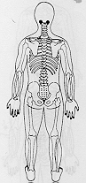
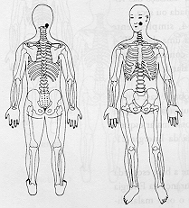

Travas de Segurança da Energia 4 - Primeira Profundidade
|
 |
TSE 4
Colocar as mãos na base do crânio na parte de trás TSE 4. ou
M.e. sobre a base direita do crânio TSE 4 ; ®
M.d. sobre o osso malar esquerdo TSE 21 . ® |
 |
Notas:1 - M.d. = mão direita M.e. = mão esquerda.2 - O texto sublinhado indica que pode ser feito usando alternadamente o lado direito (mão direita) e depois o lado esquerdo (mão esquerda). 3 - Tocar a área indicada, com a ponta dos dedos da mão, durante alguns minutos ou até sentir uma pulsação rítmica. Não precisamos nos preocupar em demasia com a precisão da área indicada, pois cada trava de segurança da energia tem uma abragência de uns sete centímetros em torno de si.